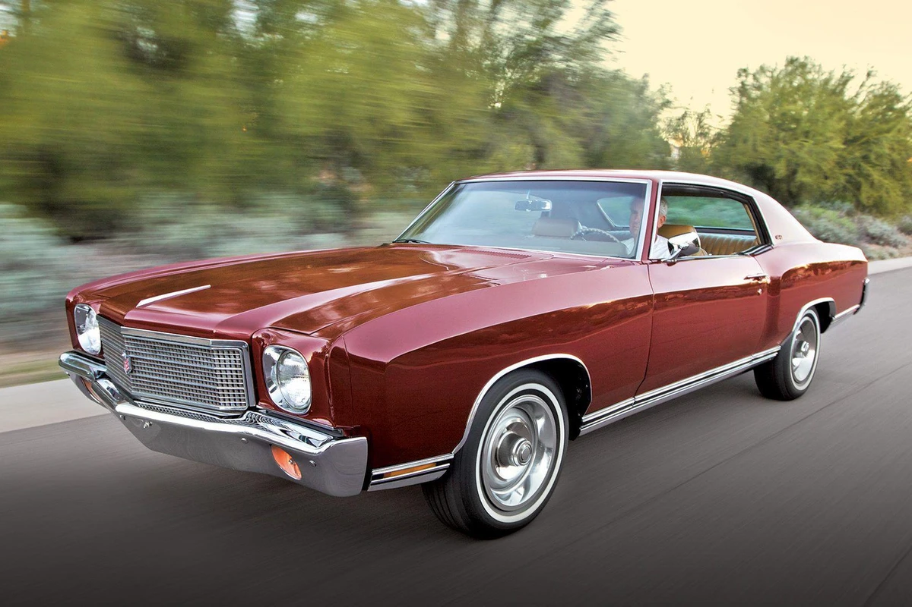
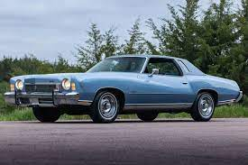
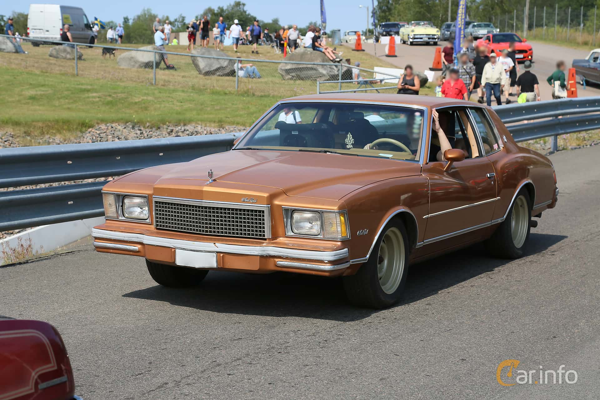
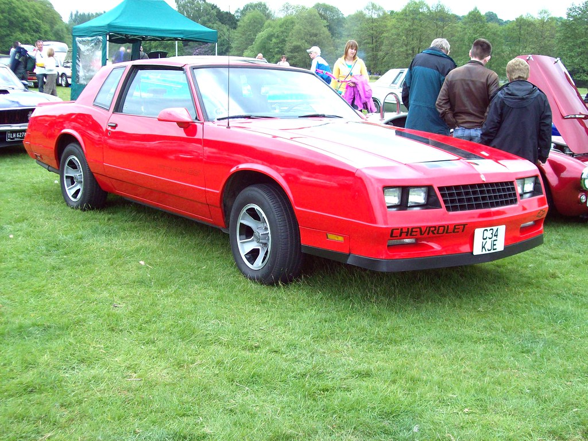
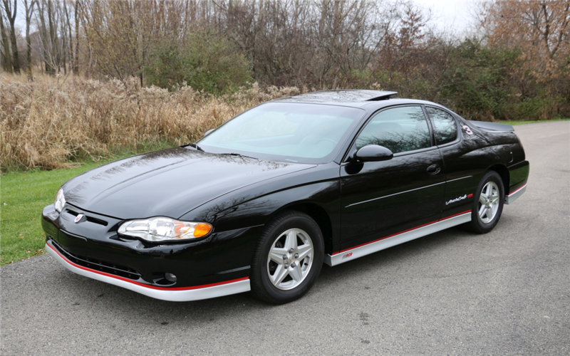
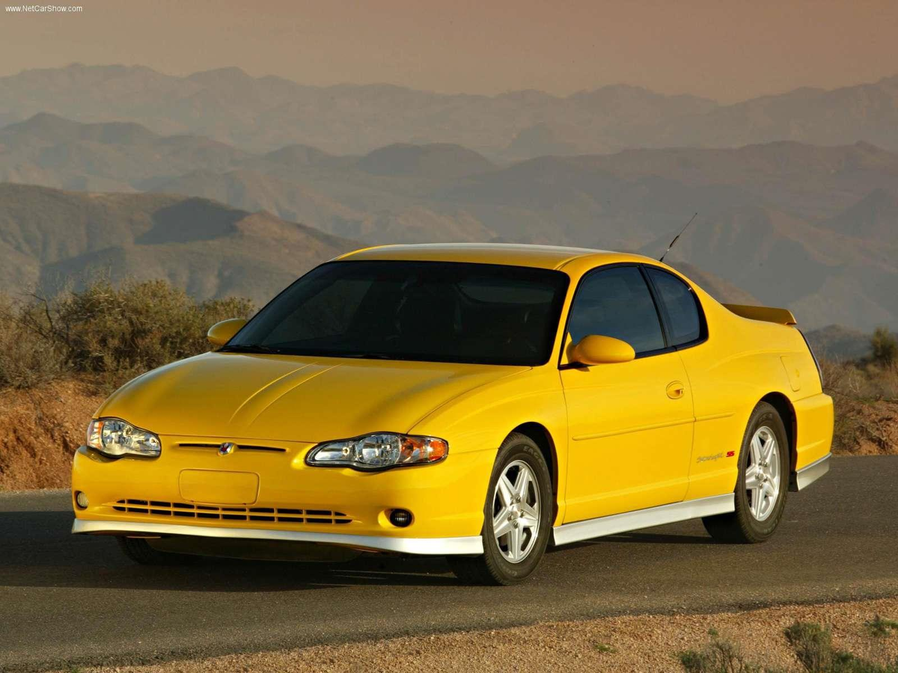

Aerodynamics
Monte Carlo was known for its sleek and aerodynamic styling, often
fetauring a long hood, sweeping roof line, and muscular stance.

V8 Engine
Powerful V8 engine with enhanced components, increased power output,
and sport tuned edxhaughst systems.

Comfortability
Spacious and comfortable cabin.
About Creator
General Motors, headquartered in Detroit, Michigan, was founded on
September 16, 1908. It is a multinational corporation that designs,
manufactures, markets, and distributes vehicles and vehicle parts
globally. General Motors owns several prominent automotive brands,
including Chevrolet, Buick, GMC, and Cadillac in the United States. It
also owns Opel/Vauxhall in Europe, Holden in Australia, and has
partnerships with other automakers worldwide. General Motors operates in
over 100 countries and has manufacturing facilities in many parts of the
world. It has a significant presence in North America, South America,
Europe, and China. General Motors played a crucial role in the
development of the American automotive industry and has been an iconic
symbol of American manufacturing and innovation. It has produced iconic
models like the Chevrolet Corvette, Chevrolet Camaro, and Cadillac
Escalade. General Motors operates numerous manufacturing facilities
worldwide, where it produces vehicles, engines, and components. It
collaborates with suppliers and has a vast network of dealerships for
sales and service. General Motors has had a rich history and has
remained a significant player in the global automotive industry. It
continues to evolve, adapt to market trends, and invest in new
technologies as it strives to remain competitive and meet the changing
needs of consumers.
Gallery
First Generation Monte Carlo

Second Generation Monte Carlo

Third Generation Monte Carlo

Fourth Generation Monte Carlo

Fifth Generation Monte Carlo

Sixth Generation Monte Carlo
